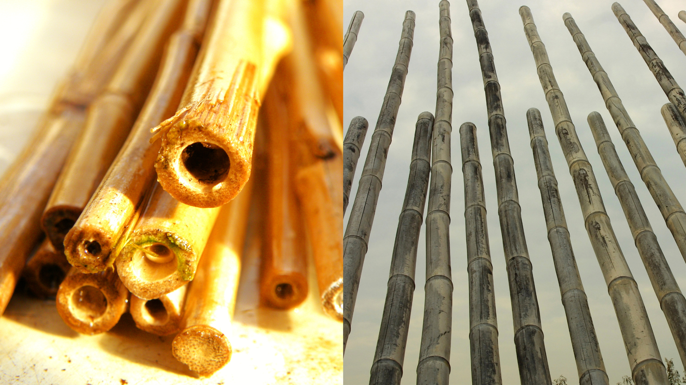
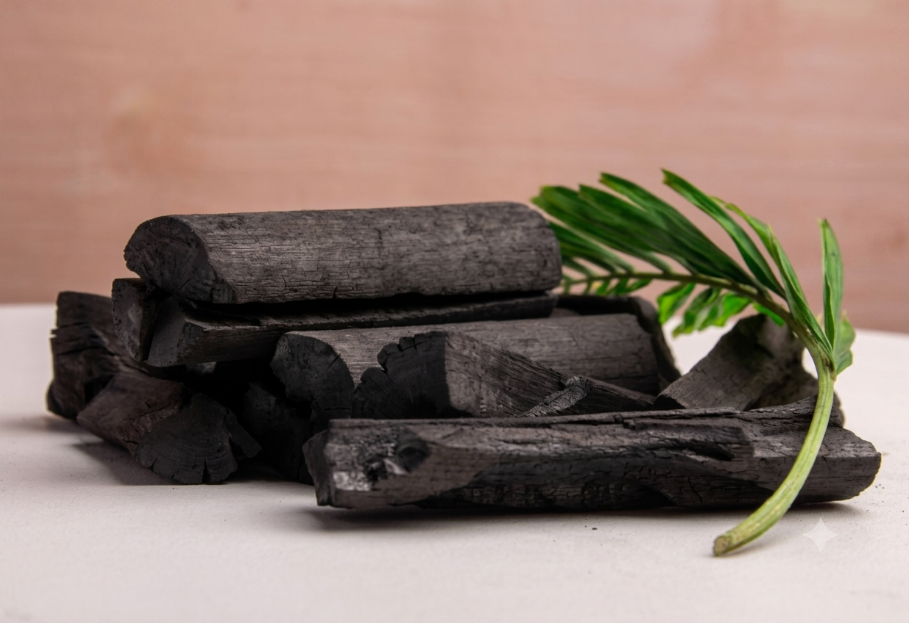

01
Bamboo Shoots
Bamboo shoots are gaining popularity nationwide as a result of rising living standards and a growing interest in quality food.
AG‑02 · Agriculture
Bamboo grown as a sustainable substitute for hardwood, fast‑growing, resilient across soils, and useful from the shoot to the full‑grown culm.
From food to construction material, bamboo is cultivated across its full lifecycle rather than a single yield.
Bamboo shoots are gaining popularity nationwide as a result of rising living standards and a growing interest in quality food.

Bamboo's versatility as a substitute for hardwood offers a chance to drastically reduce deforestation and protect the forests we have left.

Bamboo charcoal burns hotter and cleaner than traditional wood charcoal, giving households and industry a renewable fuel that regrows in years, not decades.

Why Bamboo
A single bamboo culm can be harvested within a few years of planting and regrows from the same root system, a lower‑impact, faster‑renewing alternative to timber for construction, food and everyday materials.
Start a conversation →